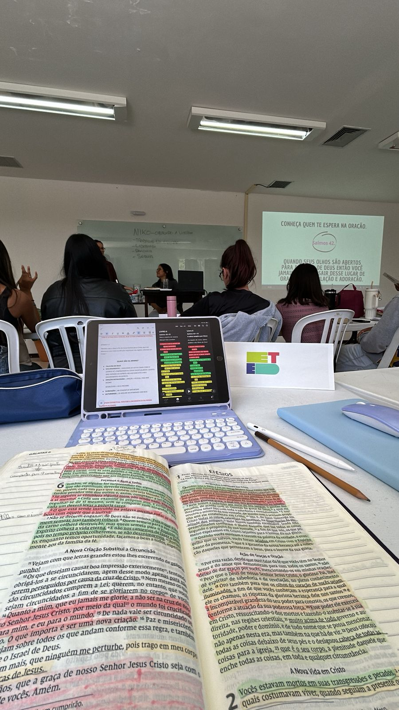
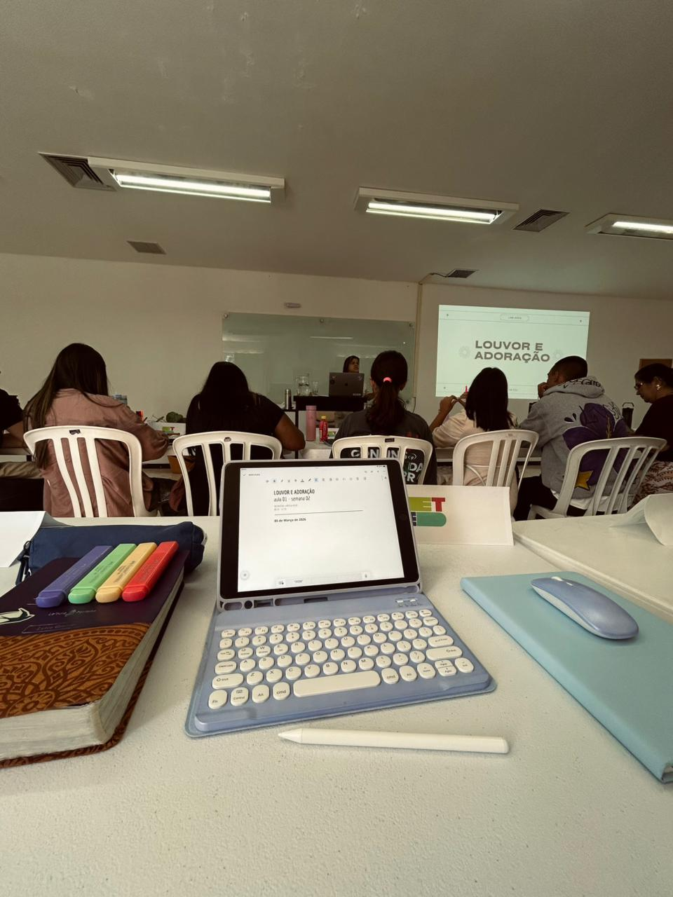

SEMANA 02
ETED
SUMÁRIO
| 1- AULA DA SEMANA | 4- RELACIONAMENTOS |
| 2- CARÁTER DE DEUS | 5- MEDITAÇÃO |
| 3- MISSÕES | 6- AUTOAVALIAÇÃO |
AULA DA SEMANA
INTERCESSÃO E BATALHA ESPIRITUAL
THAIS COSTA
02/03 - 04/03
A aula de Intercessão foi muito necessário para eu entender de maneira nova e direta o verdadeiro
significado da intercessão. Eu sou intercessor de DEUS entre nações, pessoas e situações, a
intercessão vem direto de DEUS, eu faço parte do que ELE está fazendo.
Uma dos pontos que mais me marcou muito durante a aula foi reconhecer que esse é o ministério
principal de JESUS.
E também ouvir sobre triplicar a compreenssão da santidade de DEUS.
Na aula de Batalha Espiritual eu pude ver com olhos diferentes o que é o tema e entender como
preciso me comportar diante disso.
O ponto que mais me marcou foi o da Vitória em Cristo: "Não é lutar para vencer, mas lutar a partir
da vitória". Eu entendi que devo aplicar isso em minha realidade, pois toda batalha espiritual é
essencialmente vencida em CRISTO.
SOMENTE COM INTIMIDADE COM DEUS PODEMOS INTERCEDER E VENCER AS BATALHAS.

LOUVOR E ADORAÇÃO
LARISSA ASSIS
05/03 - 06/03
Na aula de Louvor e Adoração DEUS falou comigo sobre como esse assunto tem refletido em meu
cotidiano, e como posso fazer para ter uma vida de Louvor e Adoração no meu ordinário.
DEUS também me levou para um lugar de reflexão onde me lembrei de onde ELE me tirou e tudo o que ja
vivi com ELE até aqui, e isso me fez recordar que o SENHOR me libertou das trevas para ter uma vida
que glorifica a ELE através do Louvor e Adoração.
NÃO HÁ NADA QUE SUSTENTE MAIS A MINHA VIDA DO QUE EU TER UMA VIDA DE RENDIÇÃO AO SENHOR.

CARÁTER DE DEUS
CARÁTER E NATUREZA DE DEUS
UM DEUS AMIGO E PAI
O SENHOR me levou para um lugar onde eu pude sentir ELE como um amigo, um amigo que me ama, me
conhece e se importa comigo. Porém foi uma semana onde ainda permaneci buscando sobre esse caráter
para compreender com mais clareza sobre o que ELE quer me ensinar com isso, e também para entender
como devo aplicar isso na minha vida de maneira que glorifique a ELE.
Também pude reconhecer o SENHOR como um Pai, meditando em MT 7:11.
Estou buscando viver o descanso de DEUS de forma verdadeira, como ELE direciona e não como eu
entendo.
MISSÕES
O QUE DEUS TEM FEITO NAS NAÇÕES
Durante essa semana eu intercedi pelas nações que estão em guerra, e pela não propagação dessas guerras pelos países vizinhos. DEUS me deu uma visão onde havia uma sombra grande no céu representando uma potestade, orei por essa visão e entendi do SENHOR de continuar intercedendo de maneira intencional sobre a clareza do mundo espiritual e a revelação do DEUS verdadeiro para esse povos.
RELACIONAMENTOS
VIVENDO EM COMUNIDADE
Essa semana foi um pouco tensa no quesito de comunidade, onde acabei desviando os meus olhos do
SENHOR e acabei reparando em pessoas que aparentavam não estar levando a escola a sério, e isso me
fez ter um sentimento de julgamento e crítica, onde fiquei um pouco irritado internamente.
Também acabei tendo um desentendimento com os meninos durante a janta no sabádo, por conta que
haviamos combinado de cozinhar algo e na hora quiseram mudar, de forma impulsiva acabei me irritando
e se desentendendo com ELES. Pórem um tempo depois eu reconheci o meu erro e ficamos tranquilos um
com o outro.
DEUS tem me confrontado sobre essa questão e estou buscando NELE como aplicar os seus
direcionamentos no meu dia a dia.
MEDITAÇÃO
EM ESPÍRITO E VERDADE
Eu preciso adorar a Deus em Espírito e Verdade, pois Deus é Espírito e é necessário que eu, um adorador, o adore com todo o meu Espírito e toda verdade do meu coração. O Senhor espera que eu o busque com tudo o que tenho. Ele está procurando em mim um espírito rendido e um coração inclinado.
No entanto, está chegando a hora, e de fato já chegou, em que os verdadeiros adoradores
adorarão o Pai em espírito e em verdade. São estes os adoradores que o Pai procura.
Deus é espírito, e é necessário que os seus adoradores o adorem em espírito e em verdade.
JOÃO 4:23-24
• Me lançar no SENHOR com todas as minhas forças.
AUTOAVALIAÇÃO
Minha reflexão pessoal sobre essa semana:
Essa semana creio que foi uma fase ainda de adaptação, onde pude estar compreendendo algumas áreas
que o SENHOR gostaria de trabalhar em mim, como meu ego e orgulho. Foi uma semana muito edificante,
onde aprendi em sala e também fora dela, desde os momentos de comunidade até as manutenções. Pude
senti a presença do SENHOR em muitos momentos do meu ordinário. Sinto que devo me aprofundar ainda
mais NELE, reconheci que estou no raso no quesito de busca-lô no individual, porém tenho sede para
buscar melhora nisso e também em deixa-lô me moldar todos os dias de acordo com aquilo que ELE tem
para mim.
Em alguns dias dessa semana acabei me sentindo um pouco sem paciencia por alguns periodos, mas o
SENHOR tem me mostrado que isso é algo que preciso trabalhar, e estou buscando NELE como fazer isso
todos os dias.
| Aspectos de Crescimento | Pontuação |
|---|---|
| Prestatividade | 3 |
| Gentileza | 4 |
| Organização Pessoal | 4 |
| Respeito ao Limite do Outro | 3 |
| Generosidade | 4 |
| Paciência | 2 |
| Honestidade | 4 |
| Amor | 3 |